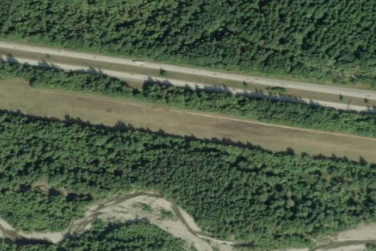

BANDERA STATE
4W0 · WA

Aerial imagery source: Esri, Vantor, Earthstar Geographics, and the GIS User Community
View original source (FAA + Shortfield) →
| Identifier | 4W0 |
|---|---|
| State | WA |
| Runway length | 2,344 ft |
| Runway width | 100 ft |
| Surface | TURF |
| Runway | 08/26 |
| Elevation | 1,636 ft |
| Ownership | public |
| CTAF | 122.9 |
| Coordinates | 47.39536888, -121.53647194 |
Notes
[shortfield] Location Overview Bandera State Airport sits in the upper Snoqualmie Valley in King County, Washington, about 14 miles east of North Bend, right alongside Interstate 90 and can be noisy during daylight hours, but quieter at night. Despite being wrapped in surrounding peaks, the valley is wide enough for maneuvering most light aircraft, which is part of why it's such a popular spot for backcountry pilots. Camping & Recreation The field offers primitive camping with 4 picnic sites, 2 fire rings, and an outhouse — but no water and no other facilities. It's open seasonally, June 1 - Oct. 1 yearly. This scenic airport offers a way to spend an hour on a stopover, or for an overnight camping trip. Anglers can try their luck on the nearby Snoqualmie River for fishing, though the trout generally run only six to eight inches long, and current regulations should be checked before fishing. Notes & Warnings This is a strip that demands respect. The 2,344 foot turf runway which is extremely soft when wet especially during the spring, with potholes, frost heaved rocks, or vehicle ruts possible. Field elevation is 1636 feet MSL, and some density altitude problems can be encountered during warmer summer days. Trees surround the airport and there are trees close to each end of the field in the approaches, and pilots should watch for elk, deer, vehicles, and pedestrians on the field. Overflight to check for surface damage, presence of obstructions, and height of grass is essential before landing. The runway south third is almost always soft, and the runway is generally smoother the farther north you land. It's closed from October 1 to June 1 due to winter conditions, with exceptions only for emergency use, and forest firefighting is common at this airport during summer months, so pilots should watch for helicopter activity and check NOTAMs/TFRs. As with all state airports, the use of state airports by all persons shall be solely at the risk of the user. History Bandera has real pedigree as an aviation site — it was built in 1948 as one of the first state airports in Washington. Over the decades it's evolved into a beloved training ground, particularly for training students in soft field work and in mountain flying, and glider clubs frequently base out of Bandera. The field has also earned a strong volunteer following — it's been informally adopted and maintained by local aviation groups volunteer maintenance support from the Fall City Pilots and the Washington Pilots Association, Seattle Chapter, reflecting the deep community ties pilots have to this rustic little airstrip.